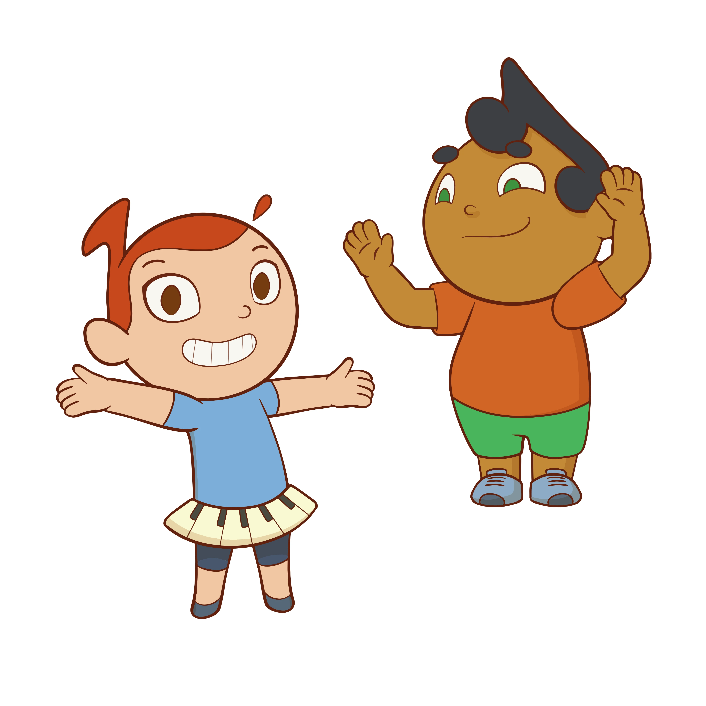

Mascotes

Lucy e Tom: Conheça Nossos Mascotes
Você já deve ter visto nossos mascotes nas redes sociais. Agora chegou a hora de conhecer um pouco mais sobre os nossos amigos Lucy e Tom! Eles foram criados especialmente para fazerem parte do universo musical dos nossos alunos e garantir muita diversão.
Tudo foi pensado com muito carinho! Depois de uma pesquisa sobre o visual da dupla, Lucy e Tom surgiram para trazer alegria para os alunos. Seus cabelos, que lembram notas musicais, e as roupas que mostram o amor pela música, tornam os dois ainda mais especiais. E os nomes? Foram escolhidos pelos próprios alunos!
O nome Tom faz referência ao mestre Tom Jobim, e Lucy é uma homenagem à famosa música "Lucy In The Sky With Diamonds", dos Beatles. Super legal, né?
Além de ver os mascotes nas nossas redes sociais, os alunos de Musicalização Infantil têm a chance de se aproximar de Lucy e Tom em sala de aula, onde os professores preparam atividades que ajudam a contar a história desses grandes artistas. E o melhor: as crianças levam pra casa esse conhecimento, memorizando tudo de um jeito lúdico e musical!
E tem mais! Criamos um canal no YouTube e Spotify, onde compartilhamos músicas autorais e conteúdo exclusivo para inspirar ainda mais nossos pequenos músicos. É uma oportunidade de ouvir e aprender novas canções, desenvolvendo ainda mais a criatividade musical!
E agora temos uma super novidade: lançamos um livro especial com músicas autorais, cifras e atividades musicais educativas, criado para acompanhar Lucy e Tom nessa jornada musical. Com ele, as crianças podem cantar, brincar, aprender e reforçar o conteúdo das aulas de forma divertida e envolvente — também em casa. As cifras permitem que educadores, responsáveis e músicos toquem as canções com facilidade, tornando a experiência ainda mais completa!
Lucy e Tom são mais que mascotes, são amigos que tornam o aprendizado musical ainda mais incrível!